Soluciones para el campo patagónico
Alambrados, tanques australianos, movimiento de suelos, construcción de tranqueras y portones y materiales rurales. Trabajamos donde el viento tiene nombre propio.
Quiénes somos
Somos una empresa especializada en servicios rurales para la Patagonia. Cada proyecto es abordado con materiales de primera calidad y un equipo con años de experiencia en terrenos exigentes.
Desde alambrados hasta tanques australianos, adaptamos cada solución a las necesidades reales del terreno y del cliente.
Lo que hacemos
Instalación de alambrados perimetrales de 5 hilos y olímpicos. Cercas de alta resistencia adaptadas a terrenos rurales exigentes.
Construcción de tanques australianos para almacenamiento eficiente de agua. Soluciones duraderas para establecimientos rurales.
Nivelación, limpieza y preparación de terrenos. Equipamiento adecuado para cualquier escala de trabajo rural.
Provisión de materiales para obras rurales. Postes, alambre, herramientas y todo lo necesario para trabajos en el campo.
Mantenimiento y reparación de instalaciones realizadas. Seguimiento post-obra para garantizar durabilidad y funcionamiento óptimo.
Construcción de tranqueras y portones para el control de ganado. Soluciones duraderas para establecimientos rurales.
Trabajos realizados
Imágenes y videos de proyectos ejecutados en campo.
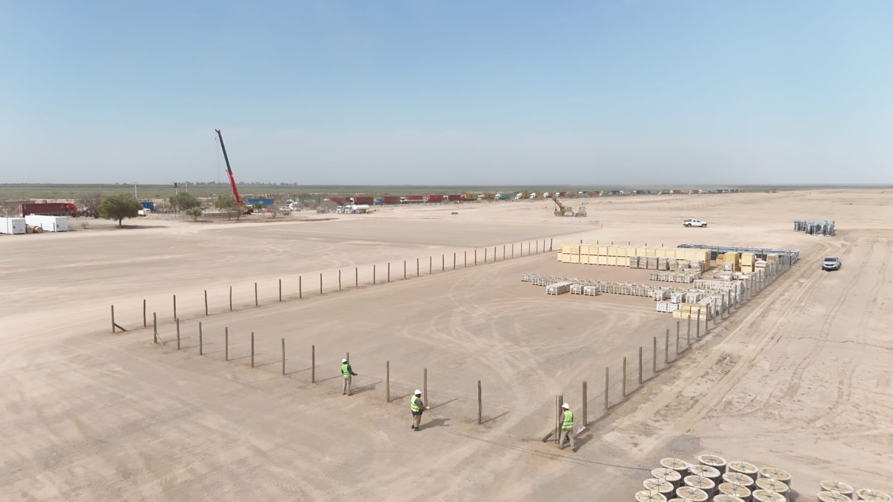
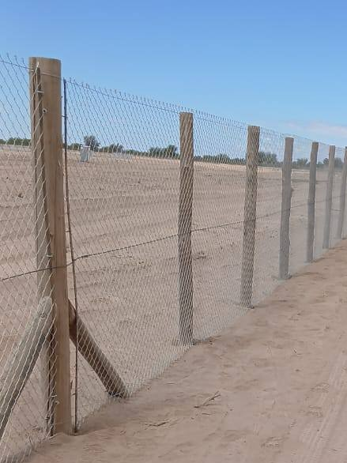
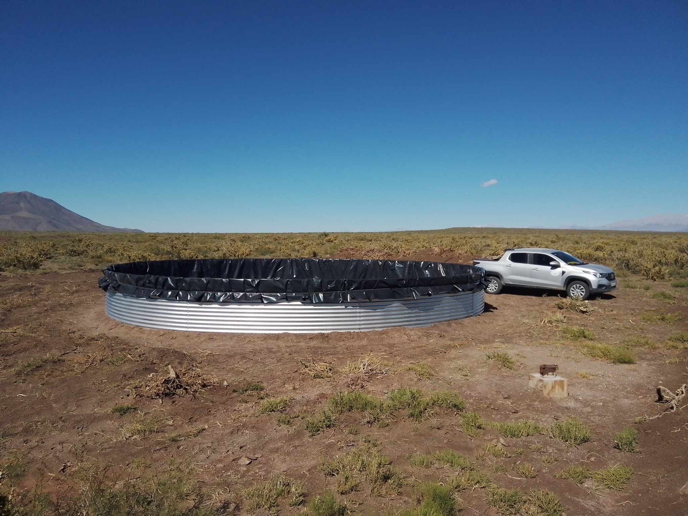
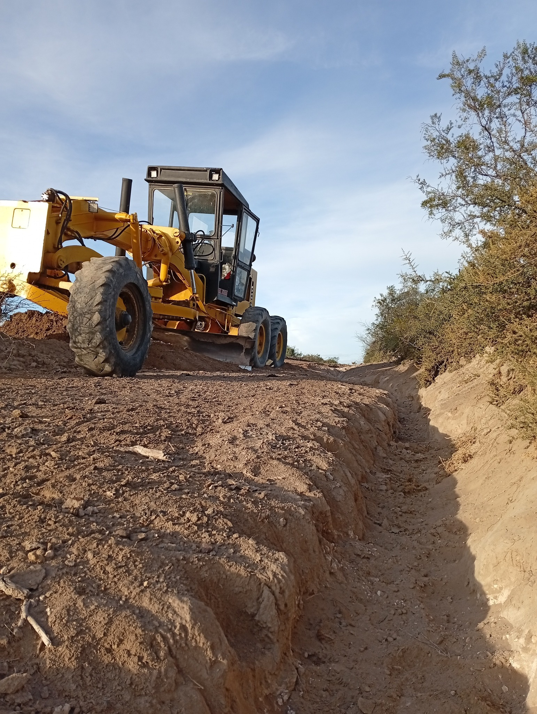
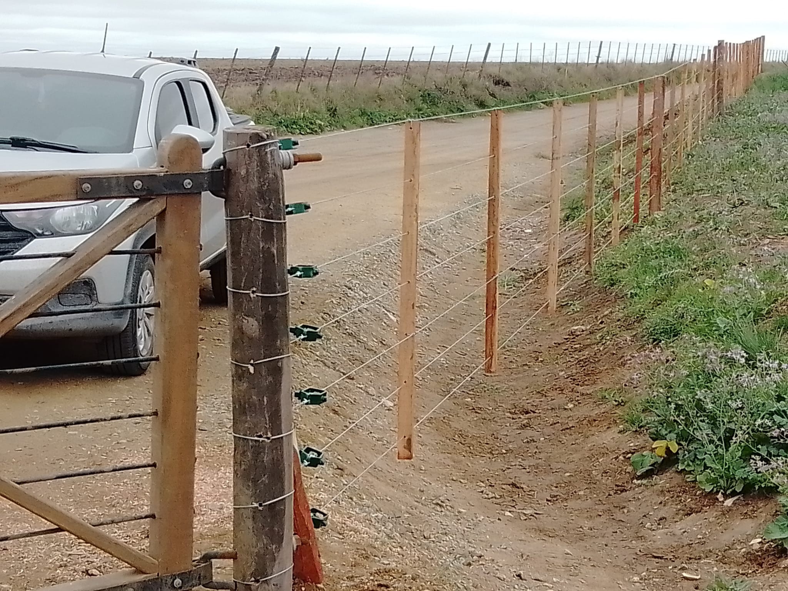
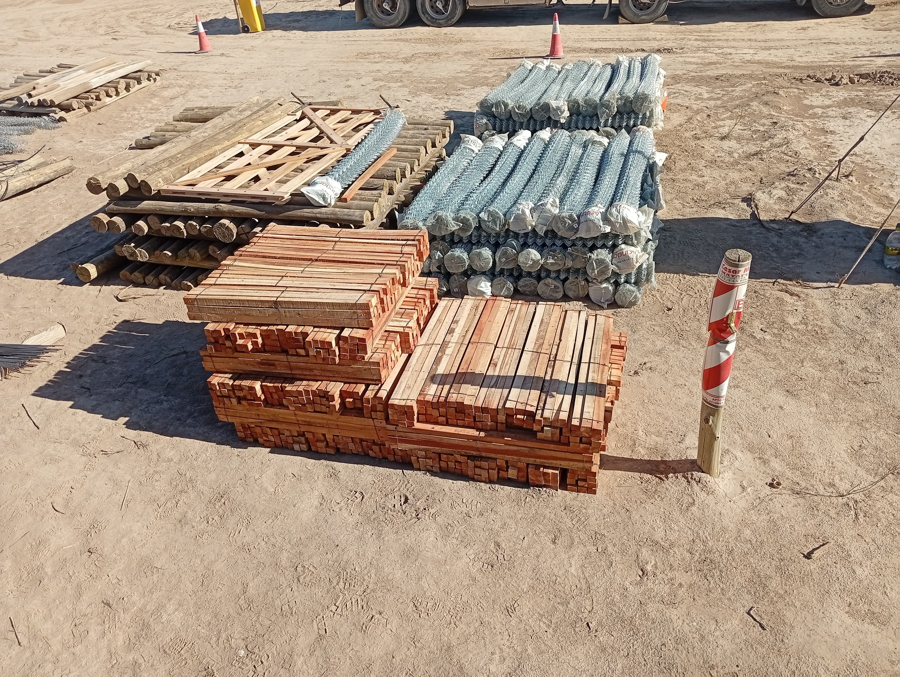
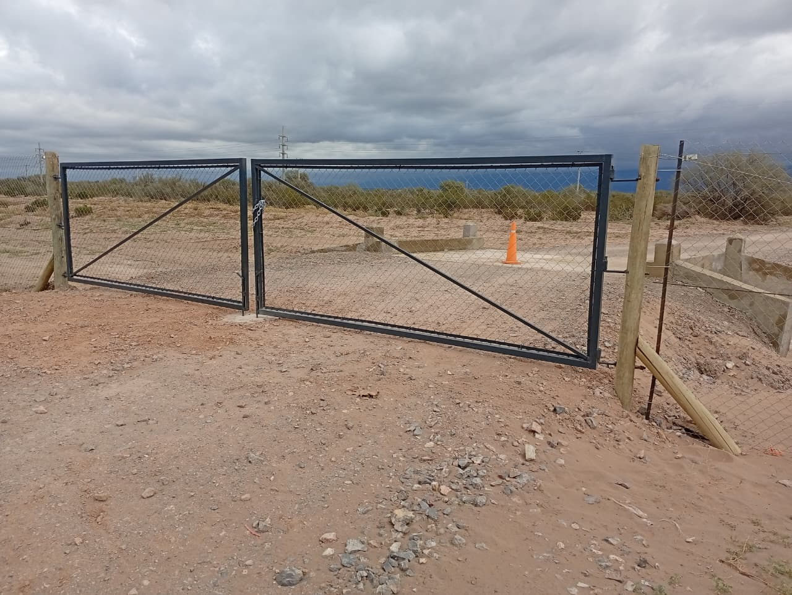
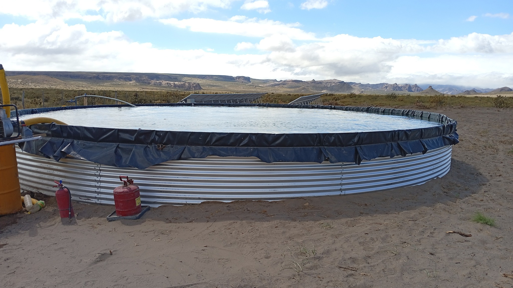
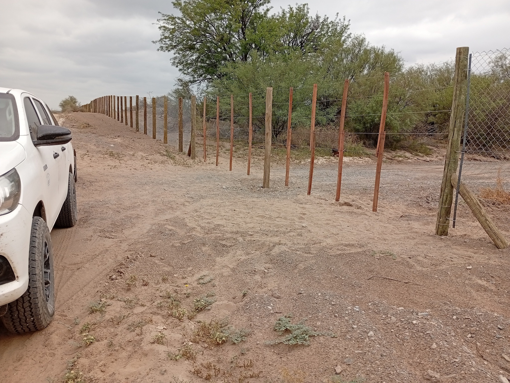
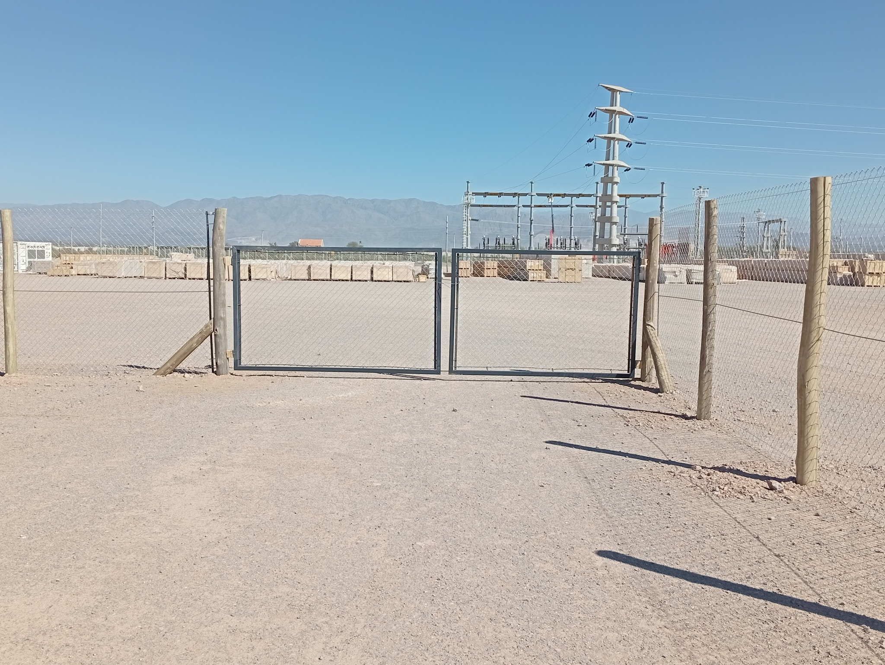
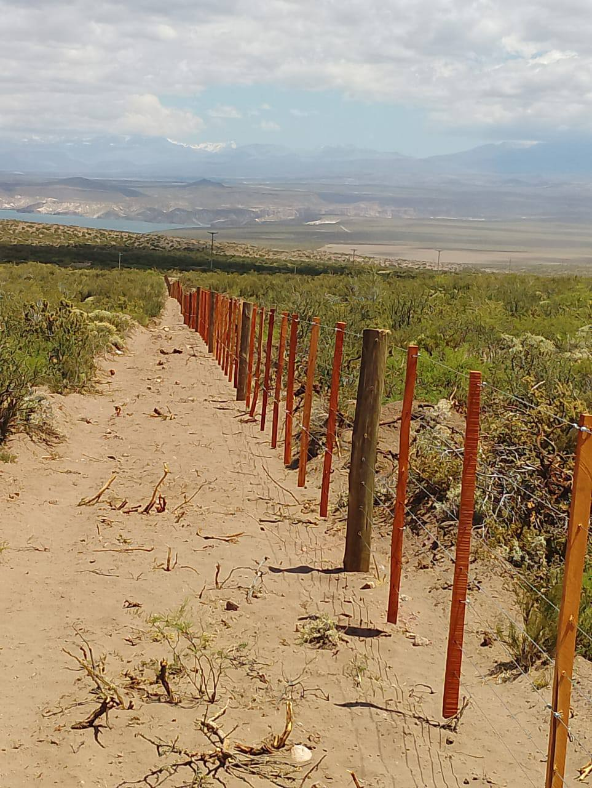
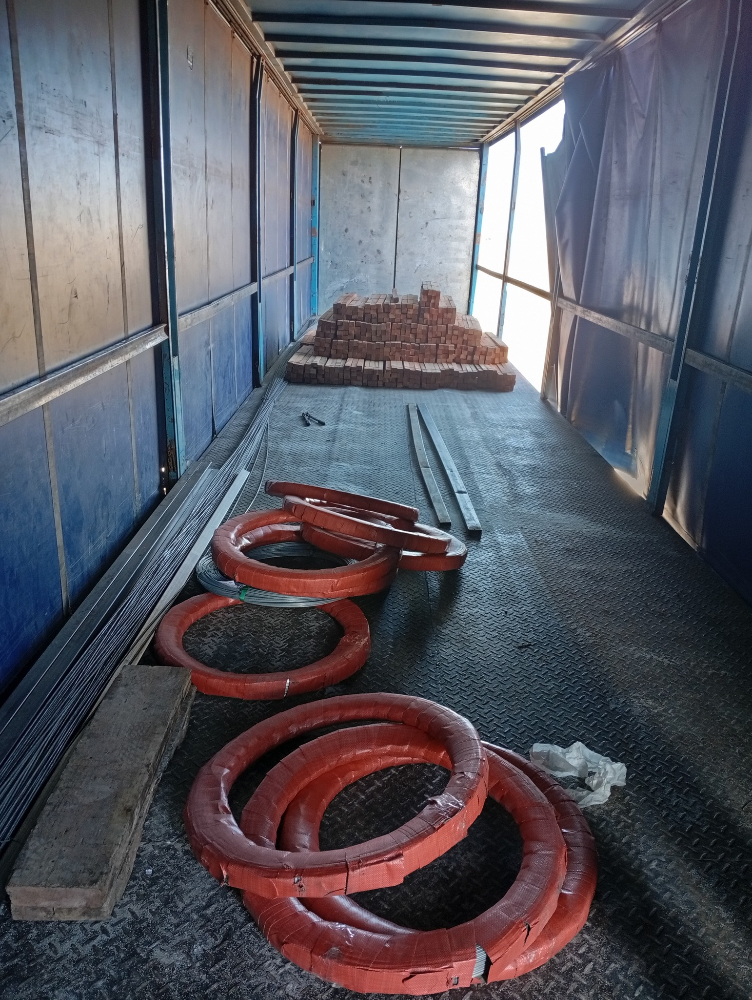
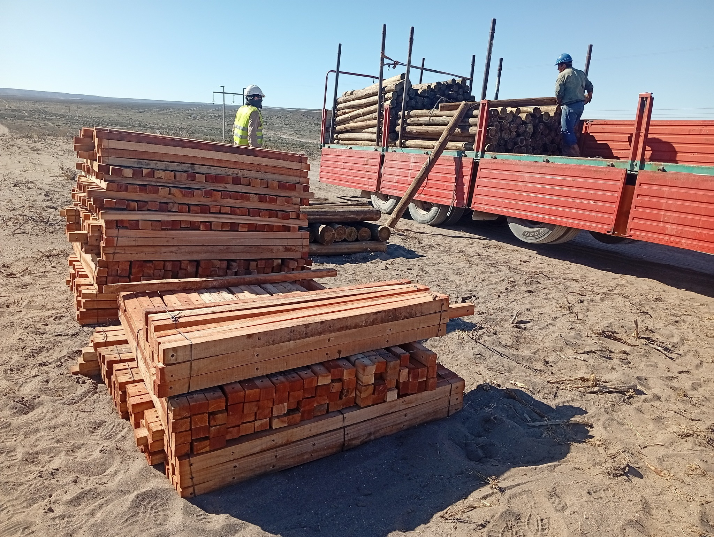
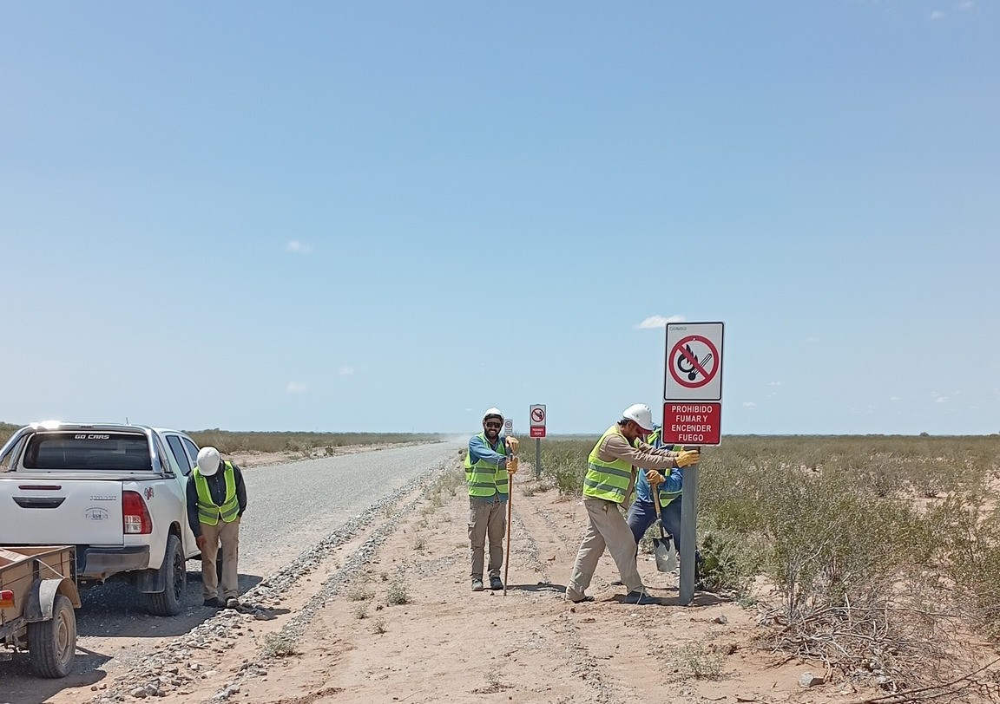
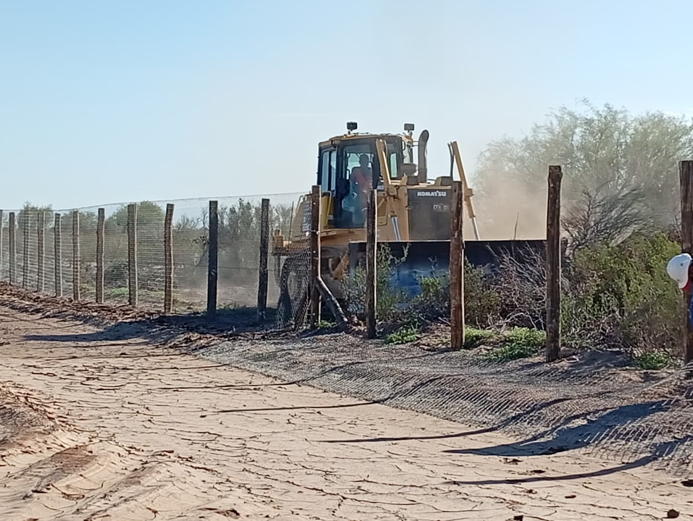
¿Querés ver más trabajos? Escribinos →
Área de trabajo
Operamos desde Río Colorado, Río Negro, con alcance en toda la región patagónica. Conocemos el terreno, el clima y las exigencias del campo en esta zona.
Disponibles para proyectos en establecimientos rurales, campos ganaderos, estancias y propiedades agropecuarias de la región.
Consultá disponibilidadRío Colorado · Río Negro · Argentina
Zona de cobertura: Patagonia norte
Hablemos
Contanos qué necesitás. Te respondemos con un presupuesto personalizado sin compromiso.